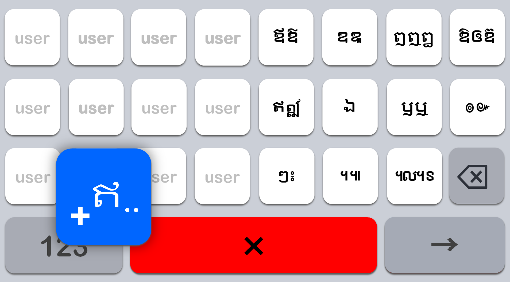

បដិវត្តន៍ក្តារចុចភាសាខ្មែរ
ក្តារចុចប៊ូតុងធំ ៨ជួរ - សបយក
Sabay Key

បដិវត្តន៍ក្តារចុចភាសាខ្មែរ
Sabay Key



លើកលែងតែព្យញ្ជនៈ និងស្រៈមូលដ្ឋាន ប៊ូតុងដែលនៅសល់ត្រូវបានប្រមូលផ្តុំនៅប៊ូតុង Space។
ចុច Space ១ដង = ជង់ព្យញ្ជនៈ, ចុច Space ២ដង = ស្រៈឯករាជ្យ និងសញ្ញាពិសេស។
ដោយសារ សបយក អាចវាយដោយមិនមើលបានក្នុងរយៈពេលតែមួយថ្ងៃ អ្នកអាចវាយបញ្ចូលបានយ៉ាងងាយស្រួលនៅលើក្តារចុចដែលមានស្រាប់ផងដែរ។